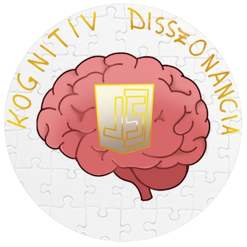
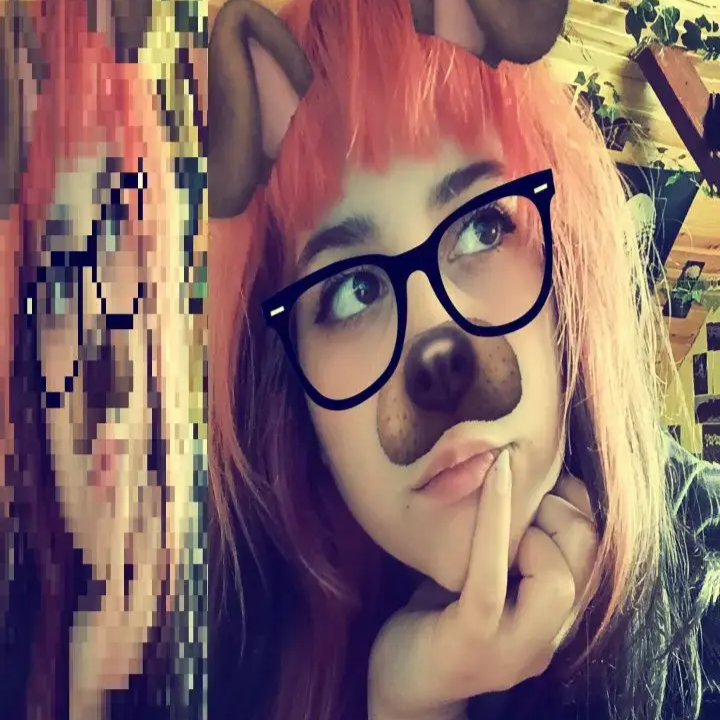
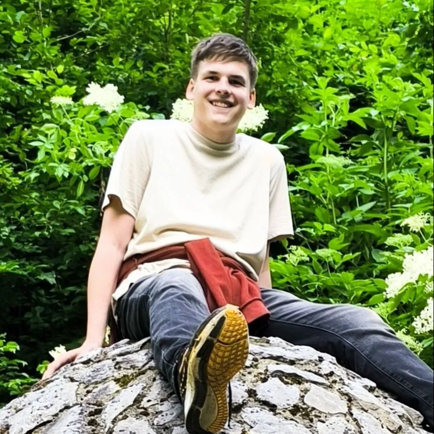
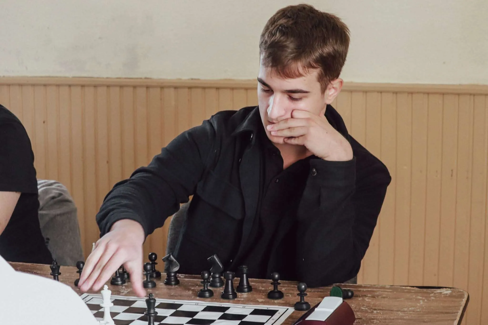
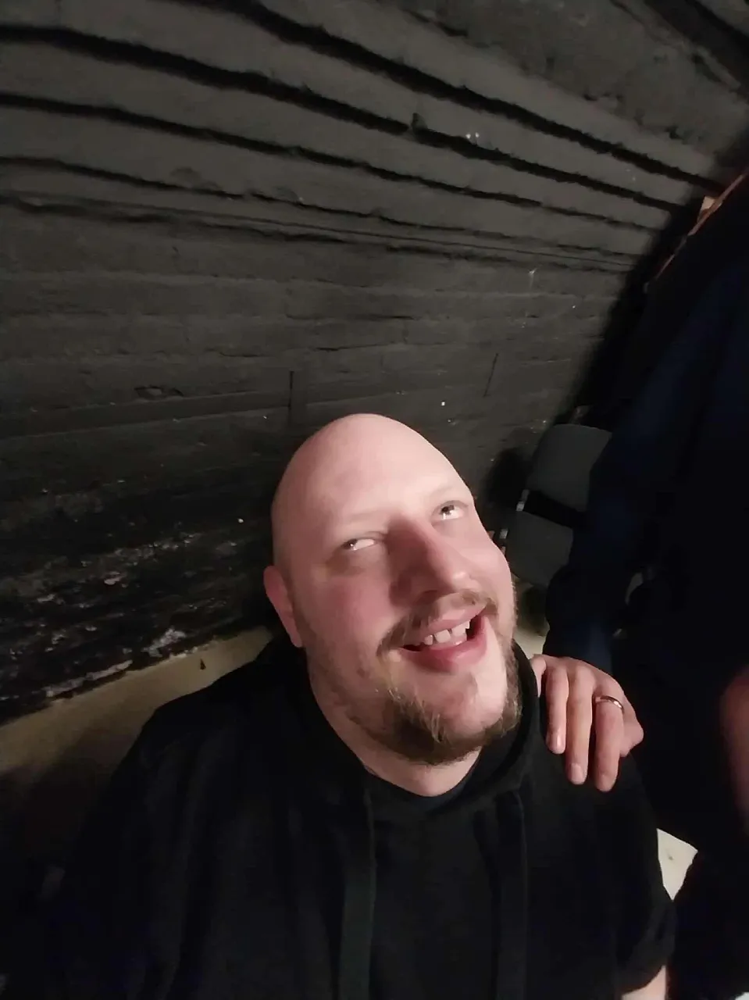

Mi vagyunk a Kognitív Disszonancia, a Ceglédi Közgazdasági És Informatikai Technikumból jövünk, hogy megmutathassuk Js tudásunkat!:)
Csapatunk tagjai

Sziasztok! Kriszti vagyok, szeretek sütni, főzni, szeretek kreatív lenni, rajzolni és fura vagyok.:p A csapat logót én alkottam meg o_o Nagyon szeretem a Rammsteint hihi

Kristóf, te csak Kristóf vagy.

Bálint Gábor vagyok. A sok mentális zavarom ellenére, komoly helyzetekben jó döntéseket hozok. Szeretek programozni, sakkozni, 3D modellezni, pókerezni és még sorolhatnám...
Felkészítő tanáraink
Csodás felkészítő tanárunk, Fnl

Csodás felkészítő tanárunk, Emán